それまで身近すぎてあまり熱心に撮影してなかった福知山線にもレンズを向け始めてますね。
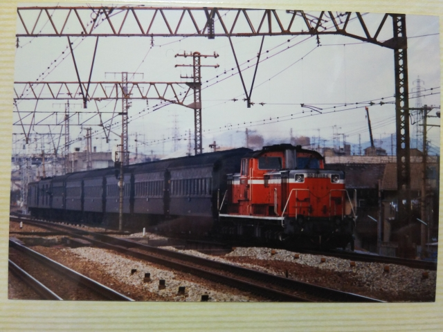
昭和６０年２月１１日（火）
７２０レ 鳥取発大阪行を塚本駅で捉えた一枚。
結局、ＤＤ５１＋雑客というのが、一番懐かしい国
鉄列車やね。
国鉄の近くに住んでる鉄道好き達はＤＤ５４のほう
がええと言ってたけど、残念ながら私はＤＤ５４は
見れなかったです。
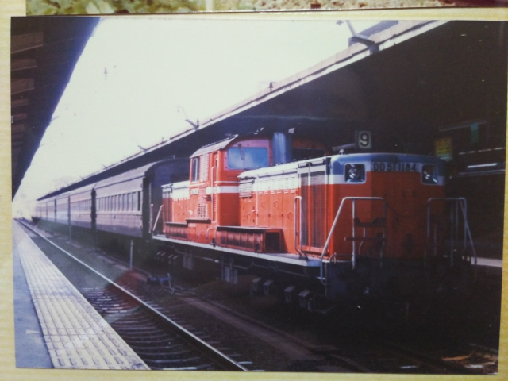
そのあと大阪まで追っかけて、同じ列車を撮影。
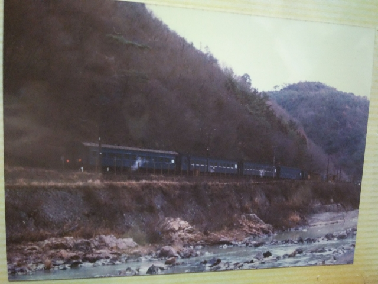
昭和６０年２月１７日（月）
武田尾で撮影です。しかし、なんで月曜なんやろ。
テスト時期やったんやろか？でも朝から行った記憶
もあるけど・・・
駅に停車中ですが、ＳＧの蒸気がいいっすね。
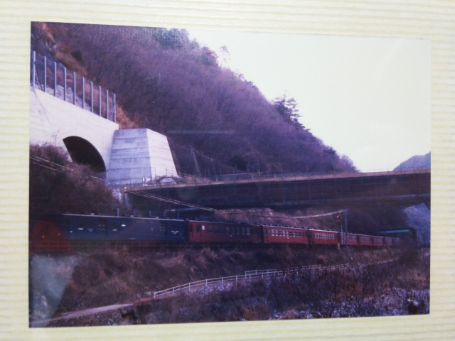
この頃は５０系も走ってたんや。記憶にない・・・
上の工事中なんが今の線路ですね。
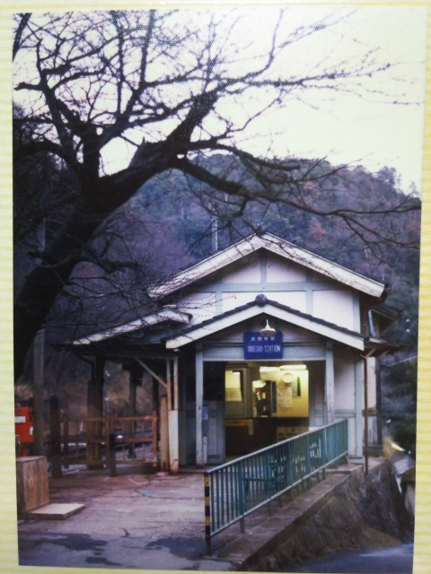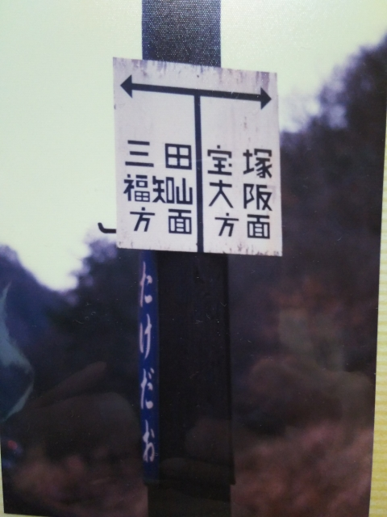
いい駅やわ。
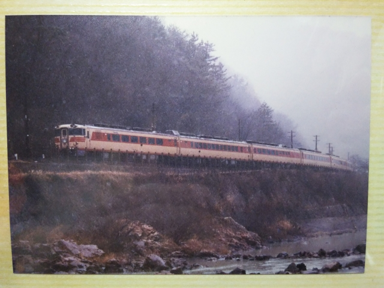
まつかぜ１号。ということは朝から行ってるなぁ。
８２系編成が綺麗ですね。
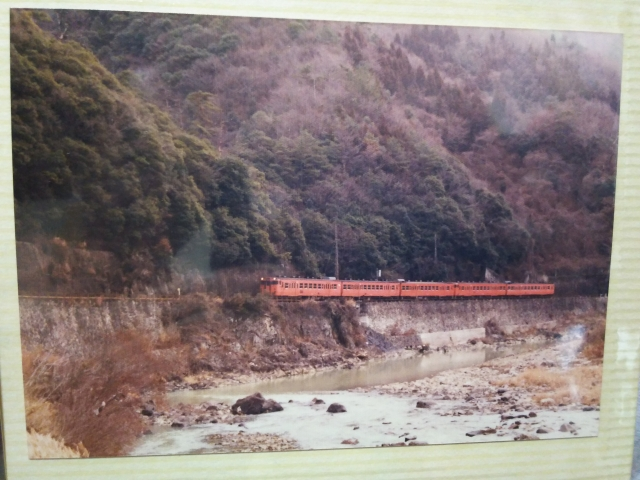
キハ４７。これはよく見ました。
しかし現在でも芸備線ではこれぐらいの編成が走っ
てるとか。それもスゴイな。
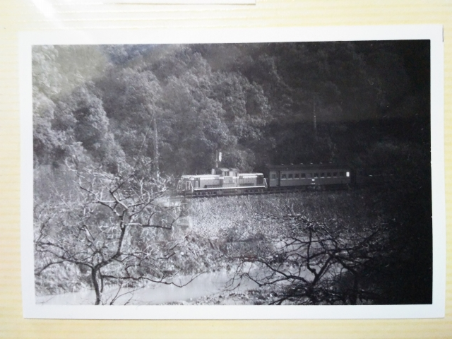
途中で白黒にフィルム交換してますね。
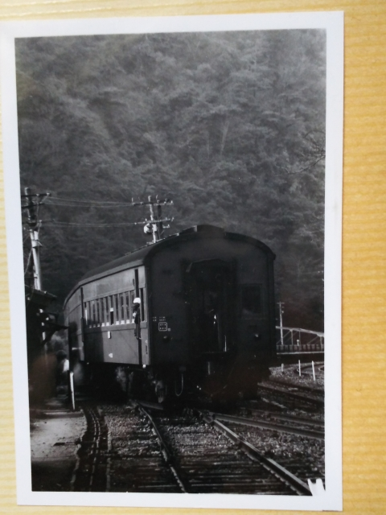
４４３レ 篠山行。
おやじの１眼レフを借りてるとはいえ、我ながらうまく撮れてるなぁ。
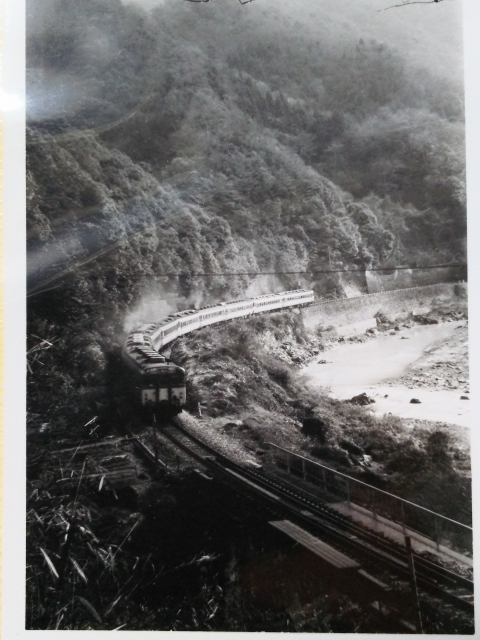
だいせん１号 浜田行。
浜田行て！
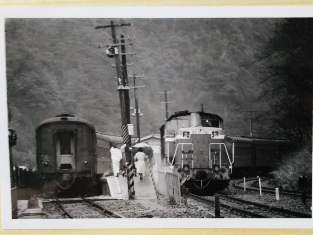
４４５レ 篠山口行と ７２０レ 鳥取発の交換で
す。
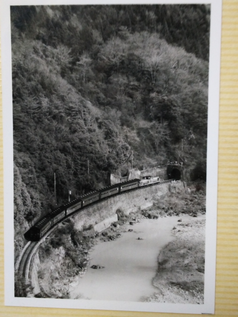
７４０レ 福知山発。
なんてすばらしい時代やったんや！！